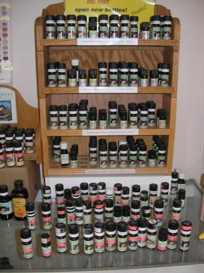
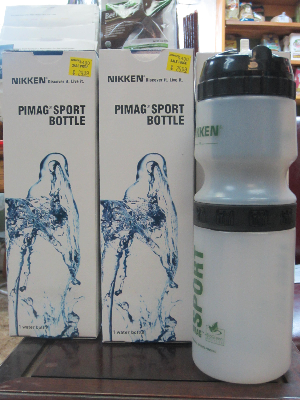

Virtual Visit

|
At Jurnack's, you will find various snack bars, chocolates, and other goodies that do not contain hydrogenated oil, high fructose corn syrup, or other potentially harmful additives. Additionally, you can find single serving protien packets, health-friendly gums and chewies. |

|
All our bulk nuts, seeds, and dried fruit contain no preservatives or sweeteners of any kind.
The dried fruit selection includes apples, apricots, cherries, coconut, cranberries, dates, figs, goji berries, mango, papaya, pineapple, and raisins. The list goes on! |

|

|
We offer a robust selection of Burt's Bees products, including deodorant, shampoo, shaving cream, baby care products, skin care products, and more. |
|
| A newer addition to our offerings is our line of paraben-free cosmetics by Natural Qualities. With the variety of colors and shades we stock, you are sure to find the ones for you! |
 s
s|  | Essential oils can be a wonderful addition to any nutritional program. Besides individual and combination oils, you will also find other aromatherapy items. |
| Country Herbals provides us with lotions, facial cleansers, aromatherapy candles, fizzy bath balls, as well as their famous goat milk soaps. |
|

If you're looking for spices or dried herbs for cooking, baking, or tea-making, you will find it at Jurnack's! Most of our spices and herbs are approximately one dollar per ounce. The variety will astound you! |
|

 | In the Big Room, you can find local-made maple syrup and honey, cereals, rice and almond milk, natural apple cider vinegar, and various other pantry essentials. |
|
| Chips, cheese puffs, crackers, cookies, and breakfast bars...yummy! |

| Our bulk bin display contains a variety of seeds, grains and flours, as well as Real Salt, flax seed meal, and gluten-free baking mix. |
|

 | We are always looking to expand our offering of gluten-free items. Currently, we stock flours, mixes, pastas, crackers, cookies, pretzels, breads, cereals, and more! |
| Some of the brands include Gluten-Free Pantry, Pastariso, Kinninnick, Ener-G, Blue Diamond, The Grainless Baker, and DeBoles. |

|
Our boxed teas include medicinal teas, as well as teas for general enjoyment. |  |
| We carry a nice variety of frozen foods, many of which are gluten-free. |
|

| Our well-stocked refrigerator offers fish oils, nut butters, butter substitute, cooking oils, as well as Barlean's fresh pressed flax seed oil. We also offer butter, cheeses, and fresh, organic, raw milk from Toy Cow Creamery. |

| Shampoos |
| For those of you who like personal hygeine and a clean happy house, we offer shampoos, conditioners, toothpaste, mouthwash, deodorant, laundry and dish soaps, and general all-purpose cleansers. |
| Fairy Tales shampoo, conditioner, and lice treatment to take care of those little beasties - without any chemicals, Naturally! |

 | At Jurnack's, you will find a nice variety of vitamins, herbs, and supplements for any nutritional program. We stock a full line of Nature Most supplements, as well as many other brands, including Garden of Life, Twin Labs, Vitalzyme, and Natural Calm. |
| Protein Mixes |
|

We carry Nature's Sunshine Products - encapsulated herbs, cleanses, drinks, homeopathics, weight-management products, and more! Nature's Sunshine Products |
|

|  | |
|
Nikken's line of magnetic technologies may enhance the body's natural healing abilities. The Aqua-Pour water unit, as well as the magnetic shoe inserts, have been greatly received by many in the Towanda area. Nikken Information | |

|
King Bio is a USA-based, FDA-registered, pharmaceutical manufacturer dedicated to the production of safe, all-natural medicines without side effects period. |